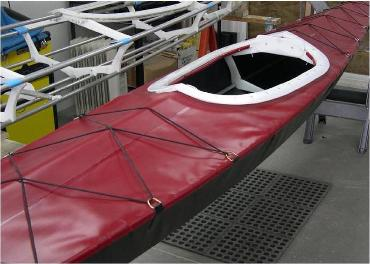
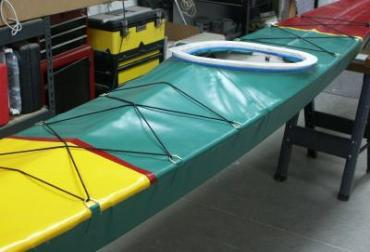
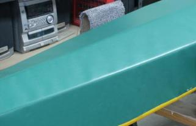

| PVC Skins | Menu Next Page |
|

 |
Introduction
This section of the manual was written to provide homebuilders with a simple method of covering folding or non-folding kayaks. The hulls are made of a single section of PVC. The decks are built with either one piece or multi-panel construction.
Sewing is required only for deck zipper installation, with all other PVC connections being glued to minimize complexity and build time. Also, no sponsons are needed. PVC is a lightweight and inexpensive skin material well suited to folding kayak use due to it's durability and flexibility for folding. It has a woven Polyester core coated both sides with vinyl. The cost to make a skin using Coverlight PVC is under $100.00 with construction times under 30 hours. The finished skin weighs less than 10lbs. This manual includes numerous photos, supported by written instructions. In addition to hull and deck covering, there are sections on deck rigging, zipper, and Velcro flap installation. Updates will be made to the manual as needed.  Several folding kayaks and skins are used to illustrate the various processes. During assembly, the skins are attached after the frame is fully assembled. |